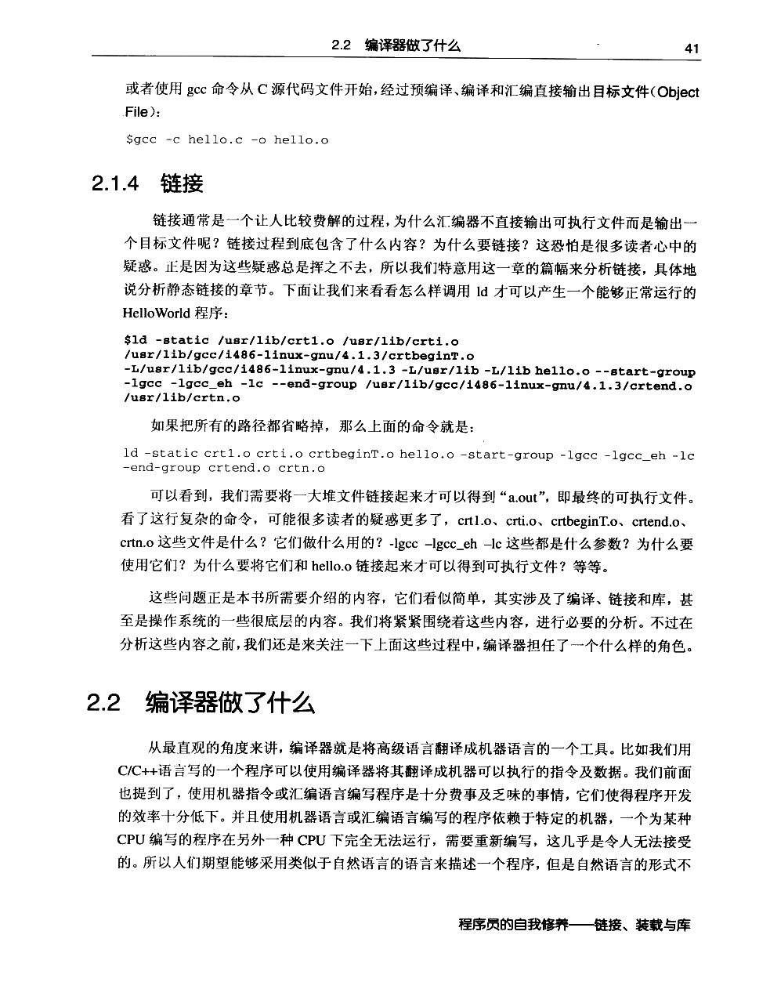
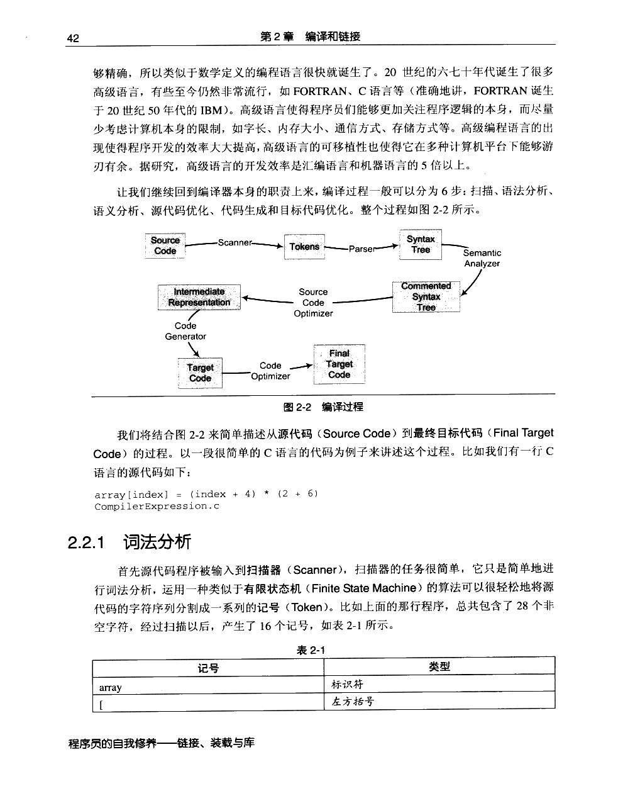
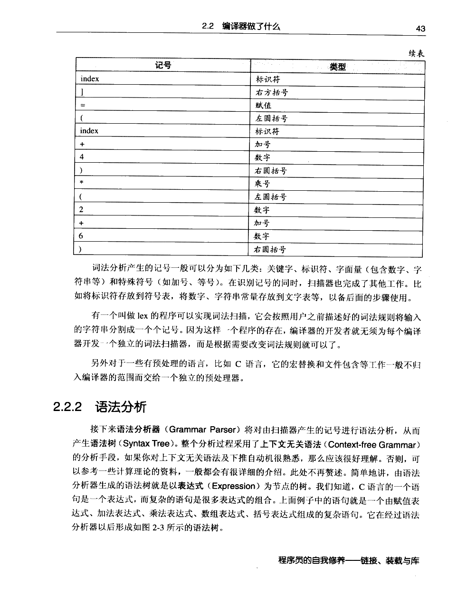
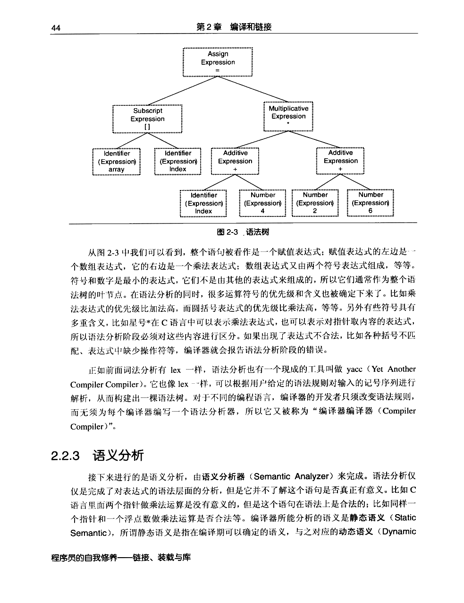
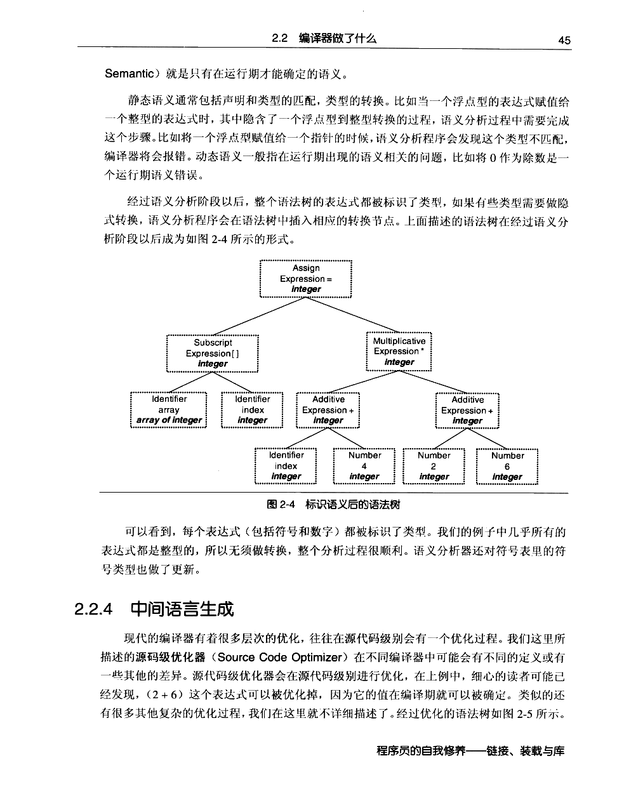
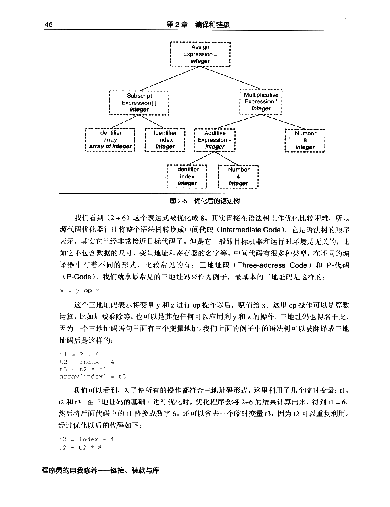
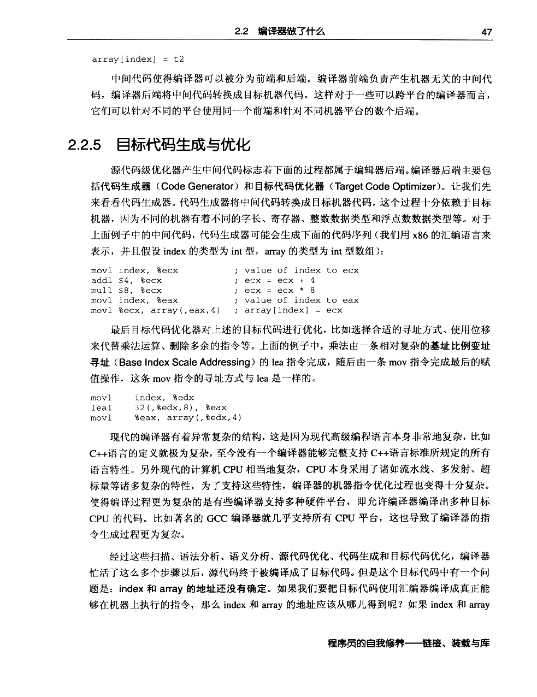
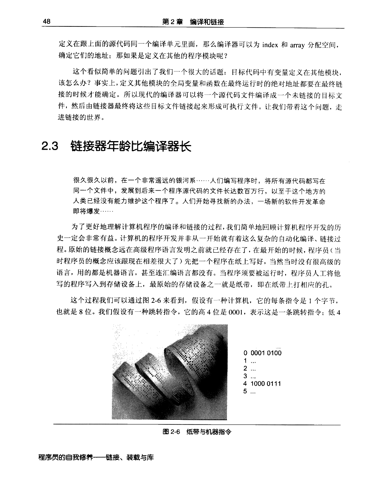

← 返回正文2.2 编译器做了什么
PDF 第 64 页 · 书内第 41 页
PDF 第 65 页 · 书内第 42 页
PDF 第 66 页 · 书内第 43 页
PDF 第 67 页 · 书内第 44 页
PDF 第 68 页 · 书内第 45 页
PDF 第 69 页 · 书内第 46 页
PDF 第 70 页 · 书内第 47 页
PDF 第 71 页 · 书内第 48 页